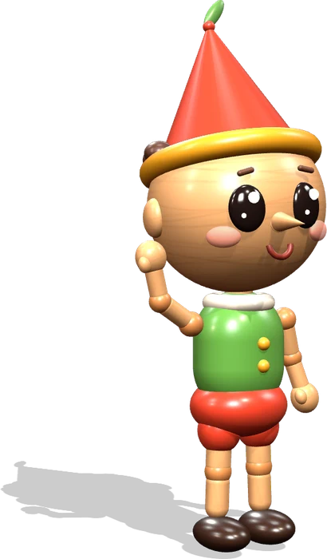
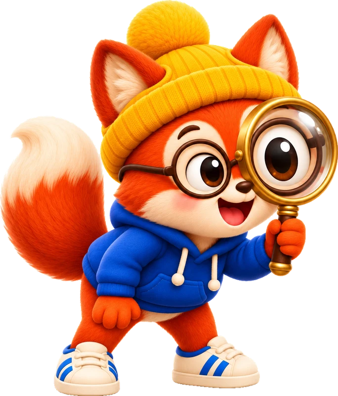
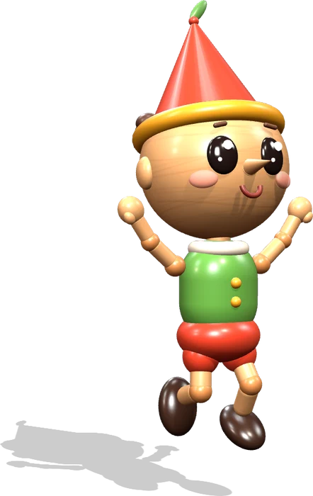
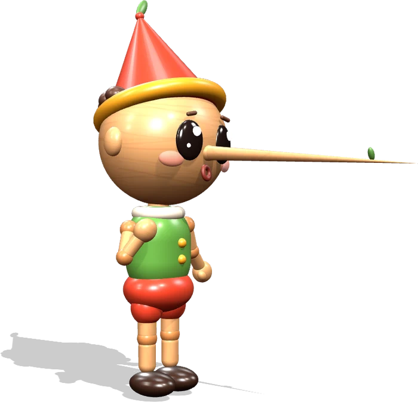
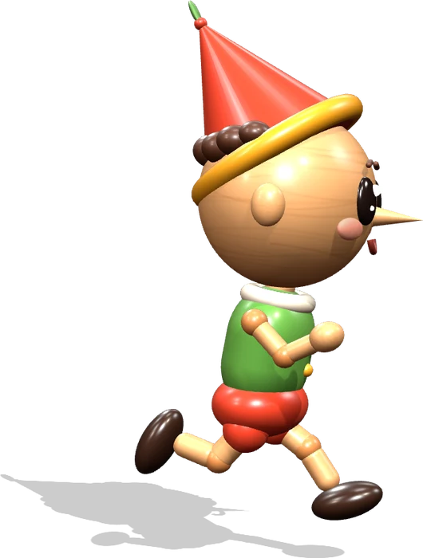
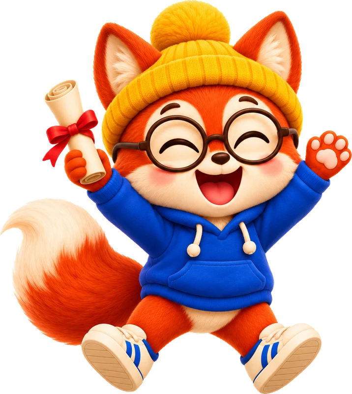
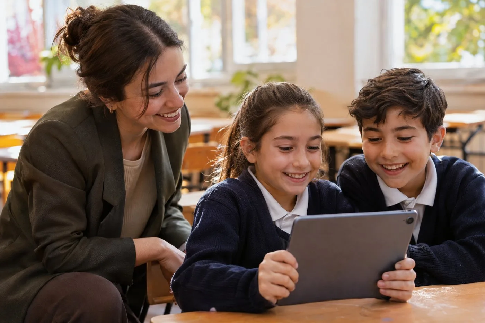

Onu geri getirmenin tek yolu, kitabı okumak. Okumino'da her kitap bir patika: sevilen eserler de, Okumino'ya özel özgün hikâyeler de. Çocuk dinler, okur, oynar, izler ve durak durak ilerleyip kitabı bitirir.
Aşağı in, Pinokyo'nun peşine düş. Altı durakta Okumino'yu kendin dene.
Birinci bölüm
Konuşan Odun

az önce buradaydı!

Okumaya başlamadan önce çocuk başlığa ve resme bakıp tahmin yürütür. İpucu: içeriden davul sesi ve alkış geliyor.
Bir kapı seç.
Seslendirme okurken her kelime sırayla yanar. Çocuk model okumayı gözüyle takip eder, Pinokyo da kelimelerin üstünden zıplar.

Yaşlı Gepetto tezgâhına oturdu, eline bir kütük aldı ve gülümsedi: “Senden öyle bir kukla yapacağım ki dans edecek, takla atacak!”
Kelime oyunları eserin kendi kelimeleriyle yapılır. Doğru kelime yerine oturunca köprü tamamlanır.
Gepetto eline bir ? aldı.
Hangi kelime?
Çocuk aynı bölümü bu kez kendi sesiyle okur. Okumino dakikadaki doğru kelimeyi ölçer. Puan hız için değil, doğru okuma için verilir.
Ses kayıtları yalnızca puanı hesaplamak için kullanılır ve puanlamadan sonra silinir.
Gepetto kütüğü yonttu. Önce saçlar çıktı, sonra alın, sonra gözler. Gözler biter bitmez kıpırdadı ve ona baktı.
0kelime/dk
Önceki rekor: 46
Rekor kırdın! +25 puan
Bu bir canlandırma; mikrofonun açılmaz.
Her durakta hikâyenin dönüm noktası kısa bir animasyonla canlanır.
Pinokyo sahneye fırlıyor. Bütün kuklalar onu tanıyor.
Anlama soruları üç türlü: gözlemci, dedektif ve düşünür. Sonunda çocuk hikâyenin sonunu kendi yazar. Burada sıra sende: Pinokyo'ya Okumino hakkında bir cümle söylet. Yalansa burnu uzar.

Bir cümle seç, ben söyleyeyim.
Son bölüm
Gerçek Bir Çocuk

Altı durak, bir eser, tek patika. Final aşamasını geçen çocuk adının yazdığı okuma belgesini alır; bitirdiği her kitap Okuma Pasaportu'na bir damga olarak eklenir.

Öğrencinin adı
Pinokyo (Kâşif sürümü) eserini okuyup tüm durakları başarıyla tamamladı.
Çocuk yalnızca hikâyeyi görür. Arka planda her adım Türkçe öğretim programı kazanımlarıyla eşleşir; öğretmen sınıfın akıcılık, kelime ve anlama gelişimini tek ekranda izler.
Dinleme ve resim ağırlıklı, kısa metinler.
Sadeleşmiş metin, sesli okuma ve akıcılık.
Asıl metne yakın; çıkarım ve yazma.

30 dakikalık canlı demoda sınıflarınız için deneme hesaplarını açalım. Dönem başı ve sonu akıcılık ölçümüyle gelişimi birlikte görelim.